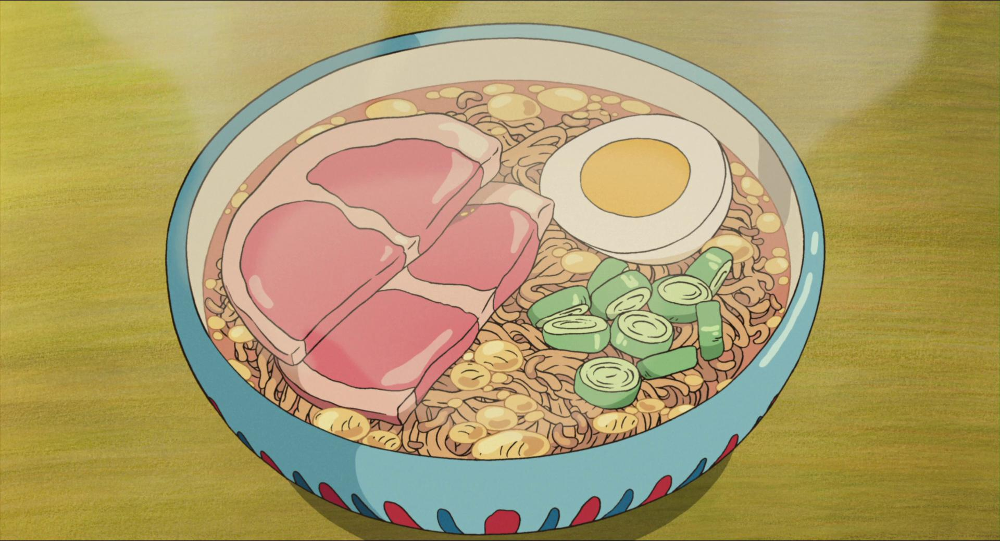

1. Bacon and Eggs from Howl's Moving Castle
Bacon and Eggs is a classic breakfast that remains first place in a full stomach. besides being nutritious, this food made by Sophie and heated by Calcifer made her happy all day. Although only animated, but still looks charming.
2. Herring and Pumpkin Pie from Kiki's Delivery Service
Herring and Pumpkin Pie from Kiki's Delivery Service is food made by grandma for her grandchildren. Kiki was assigned to deliver this food to her grandchildren's house. As always, grandma's cooking is always number one. Moreover, this Herring and Pumpkin Pie is made manually by a traditional burning stove, the aroma of wood burning arouses the taste of anyone who eats it.
3. Bento Boxes from My Neighbor Totoro
It's not only mother's cooking that has good taste. Satsuki's food made with love for her father and sister, Mei also still tastes good. Nutrition complete with tobiko eggs and fried fish keeps them spirited all day long. Have a good lunch!
4. Ramen from Ponyo on The Cliff by The Sea
Ramen, complete with eggs and ham, is a menu served by Lisa for Sosuke and Ponyo when a storm hits land. Suitable menu during a rainstorm. Ponyo's favorite food is ham. So, no wonder he will finish a bowl full of delicious ramen when it rains.
5. Sandwiches from Ponyo on The Cliff by The Sea
sandwiches are very basic food. Everyone loves sandwiches from childhood to adulthood. this is a complete nutritional food which of course contains Ponyo's favorite ham. Now, they are ready to sail the world with a stack of sandwiches!
6. Spahgetti Bolognese from Porco Rosso
Who can resist the charm of Spaghetti Bolognese? Even by a professional intel at the same time loving her taste. The animation is very neat. I almost forgot that it was only a cartoon. Have a good lunch!
7. A Heap of Buffet Food
Eating a buffet on an empty stomach is very tempting. Especially with such a complete menu, there are chicken, sausages, pork, with various kinds of seasonings guaranteed to make you unable to resist it. However, don't overeat it! Excessive things can make you turn into a pig like Chihiro's parents!